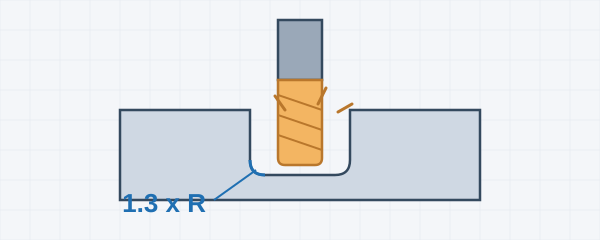
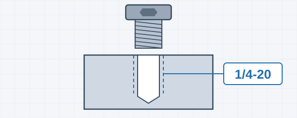
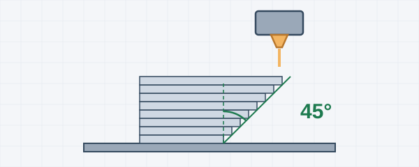
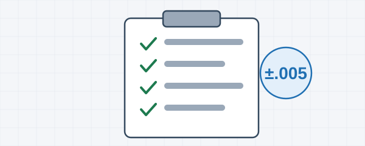
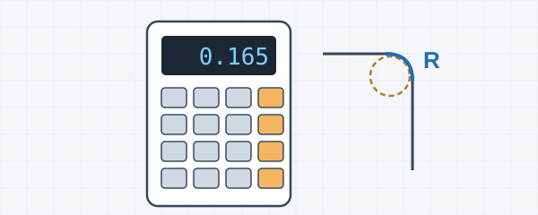

CNC Machining
Milling and turning rules, corners, walls, setups, stock sizes, tolerances and cost.
Design for Manufacturing
Pick a section. Each one collects the rules, tables and diagrams you need while the CAD model is open.

Milling and turning rules, corners, walls, setups, stock sizes, tolerances and cost.

Model the pilot hole, not the thread. Pilot tables, tap drills and insert sizes.

FDM, SLA, SLS, MJF and DMLS: choosing a process, materials, passages and overhangs.

The most-used numbers on one searchable, printable page.

Corner and floor radius picker, metric / inch, mass, drill finder and a scratch pad.